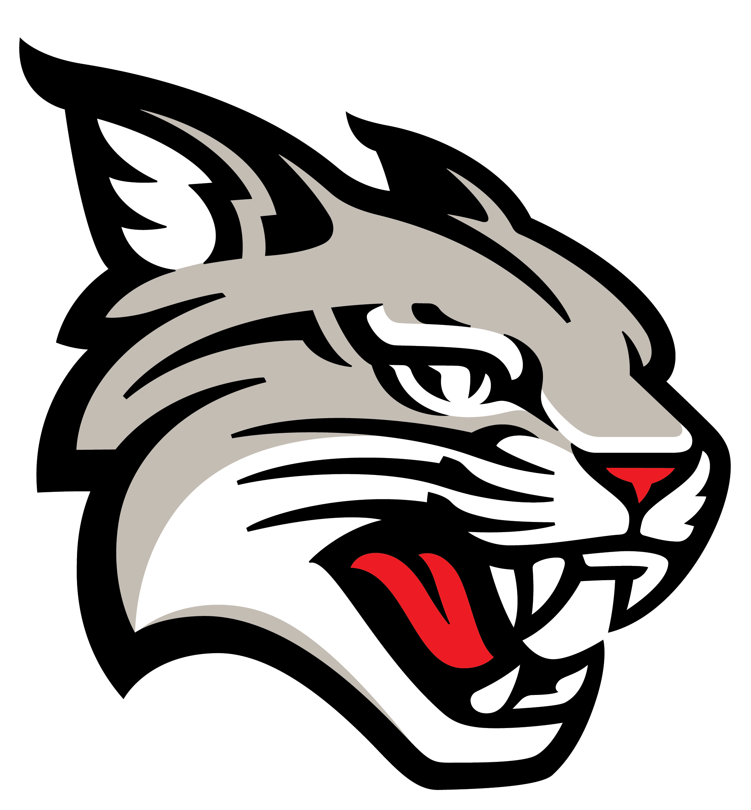
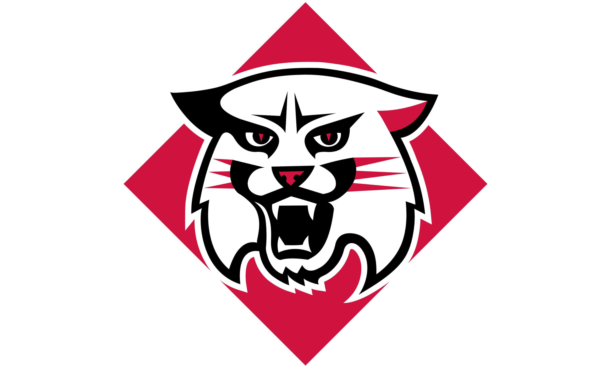

Wildcat Ways 
Find the fastest path through Davidson College's campus!
+
Find Optimal Path 
Academics
Chambers
Dana
E.H. Little Library
Hurt Hub
Sloan
Wall
Watson
Administration
Admissions and Financial Aid
AADR
HR
ISP
Registrar
RLO
T&I
Arts
Sloan Music Center
VAC
Cunningham Theatre
Duke Family Performance Hall
Athletics
Doe Weight Room
Chidsey Gym
Union Gym
IM Fields
Field 76
Game Changers Field House
Baker Sports Complex
Richardson Stadium
Alumni Stadium
Wilson Field
Carol Grotnes Belk Turf Field
Dining
Commons
Davis Cafe
Nummit
Wildcat Den
Qdoba
Dorms
Belk
Rich
Little
Watts
Chidsey
Cannon
Sentelle
Duke
Irwin
Akers
Knox
Flowe
Davis
Daley
Hart
Jamie
Ryburn
F
Patterson Court
KSIG
SAE
FIJI
PHI DELT
Warner
Rusk
Connor
Turner
Spencer-Weinstein Center
BSC
PASA X OLAS
Student Life
Davidson Outdoors
Student Activities
Union
Old Tennis Court